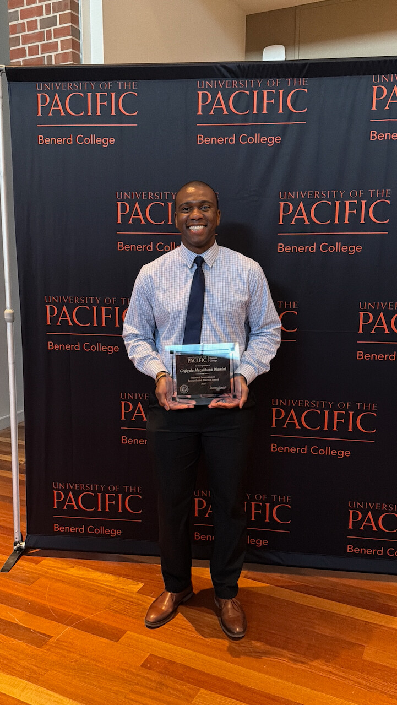
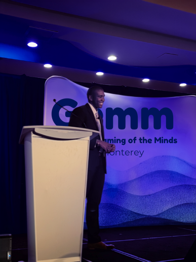
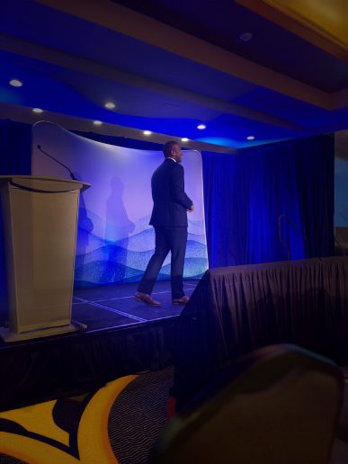
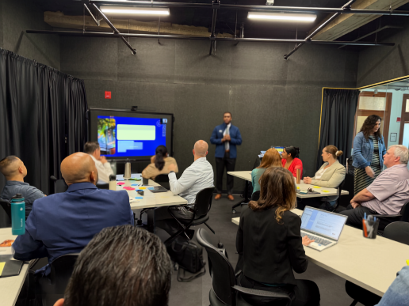
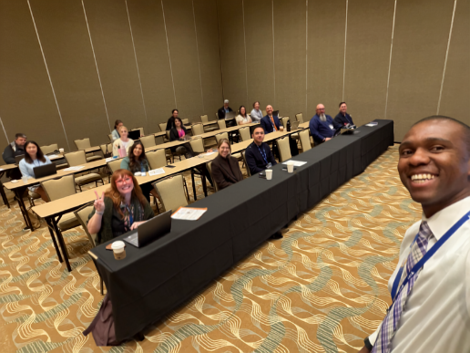

Shift the room from uncertainty to agency.
For: Conferences, executive forums and leadership convenings.
Outcome: A hopeful, practical frame for leading through AI, change and complexity without losing the human center.
Discuss a keynote →Dr. Geqigula Dlamini · Leadership & Mission Enablement
I help mission-driven organizations strengthen their capacity to achieve meaningful results through strategic leadership, innovation and empowering people.
Through keynotes, leadership workshops and advisory work, I focus on human-centered AI adoption, organizational change and the conditions that help people act with agency.
“Our greatest potential lies beyond the limits of our own imagination and what we believe is possible.”Dr. Geqigula Dlamini

About

I was born and raised in Zimbabwe during some of the country's most challenging economic years. That experience taught me resilience, optimism and the value of finding agency even when circumstances are difficult.
I am proud of that heritage and journey. It informs how I lead and my belief that much of what we assume is impossible can become possible. My career has crossed finance, private-sector management, public service, organizational leadership, governance, applied research and entrepreneurship.
I have served on the board of a community credit union and as a trustee in one of the world's largest public retirement systems. I completed a Doctorate in Leadership and Innovation at the University of the Pacific.
The speaking and research shared here reflect my personal views and independent work. They do not represent the position of any employer or agency I serve.
Work with me
I work with leaders of mission-driven organizations navigating consequential change, helping people, strategy and execution move together.
For: Conferences, executive forums and leadership convenings.
Outcome: A hopeful, practical frame for leading through AI, change and complexity without losing the human center.
Discuss a keynote →For: Mission-driven teams navigating AI adoption and organizational change.
Outcome: Shared language, baseline capability and a practical path for experimentation and responsible adoption.
Discuss a workshop →For: Executives, boards and leaders responsible for complex implementation.
Outcome: Clearer priorities, stronger stakeholder alignment and operating conditions that support execution.
Discuss advisory work →Speaking
I speak about human-centered AI adoption, empowerment, organizational alignment, innovation and the discipline of optimism.
Meeting of the Minds 2026 · Monterey, California
In September 2026, I delivered the closing keynote at the California Workforce Association's Meeting of the Minds conference. The keynote focused on a simple proposition: AI adoption is not only a technology challenge. It is an opportunity to increase agency, learning and human capability across organizations.
The session connected research on empowerment with the realities leaders and practitioners face as AI changes work. It encouraged organizations to make adoption something people help shape rather than something that simply happens to them.
“Terrific talk.”Meeting of the Minds conference attendee
“I love your messaging around empowerment.”Meeting of the Minds conference attendee


Research
My doctoral research used participatory action research to examine how public-sector professionals could explore generative AI through training, structured experimentation and shared learning. The people doing the work were co-researchers who helped shape how the technology could serve their work.
Findings from a small participatory study, not a controlled evaluation. Explore the survey data ↗
Governor's Innovation Fellows · September 2026
In September 2026, I spoke with Cohort 3 of the Governor's Innovation Fellows and shared an overview of my dissertation study on generative AI, empowerment and program administration. This was the second Governor's Innovation Fellows cohort I presented to in the past year, following a session with Cohort 2.
The conversation focused on what the research suggests about human-centered adoption: build baseline capability, create room for thoughtful experimentation, and give the people closest to the work meaningful agency in shaping how new tools are used.

Two cohorts · One recurring question
How do public organizations adopt emerging technology in a way that strengthens, rather than diminishes, the agency of the people doing the work?
University of the Pacific · Changemakers
I have twice presented through the University of the Pacific's Changemakers series, bringing research and practice into conversation around leadership, innovation and the changing nature of work.
The presentation linked here is separate from my dissertation and reflects a broader conversation about generative AI, organizational leadership and responsible change.

California Educational Research Association · CERA 2025
At CERA 2025, I presented applied research on generative AI and program administration. The session translated participatory doctoral research into a practical conversation with field leaders.
The session used live audience polling and structured discussion to surface how generative AI is being used and where it is most useful in program administration.
“The future should be something people help shape, not something that simply happens to them.”Dr. Geqigula Dlamini
For keynotes, leadership workshops, advisory work, research conversations or collaborations, share a little about your audience and the outcome you want to create.